Destek
İletişim: [Geliştirici adı / e-posta]
Soru, hata bildirimi ve önerileriniz için yukarıdaki adrese yazın. Uygulamanın kullanımı aşağıdaki kılavuzda anlatılır; aynı kılavuz uygulamada da vardır (Ayarlar › Yardım).
Uygulama resmi değildir; avlanma kurallarına uymak ve yasal sorumluluk avcıya aittir.
Kullanım kılavuzu
Av Haritası, İstanbul'da avcılar için ava yasak ve avlanabilir alanları, MAK 2026-27 kurallarını, av gününü ve saatini gösteren, kuşu sesinden, fotoğrafından ve videosundan tanımaya yardım eden ücretsiz bir iPhone uygulamasıdır. Uygulama internetsiz çalışır. Bu kılavuz uygulamanın içinde de vardır (Ayarlar › Yardım).
Temel bilgiler2
Uygulama resmi değildir
Av Haritası yardımcı bir araçtır; yasal sorumluluk avcıdadır. Sınırlar birkaç yüz metre sapabilir: sınıra yakınsanız ve emin değilseniz avlanmayın. Yeşil durum; avcılık belgesi, izin kartı, AVBİS izni ve tür limitleri gibi yükümlülükleri kaldırmaz.
Bu kılavuz
Kılavuza Ayarlar › Yardım'dan ulaşırsınız; internetsiz çalışır, üstteki arama kutusuyla konu bulabilirsiniz. İlk açılıştaki tanıtım sayfalarını da buradan yeniden açabilirsiniz.

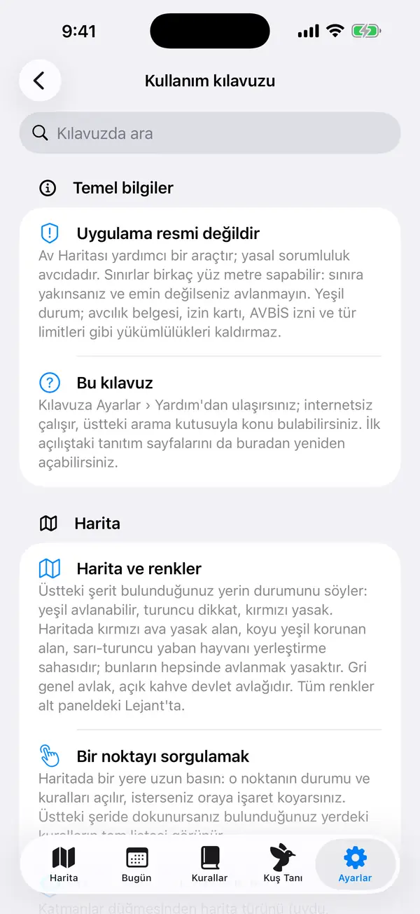
Harita5
Harita ve renkler
Üstteki şerit bulunduğunuz yerin durumunu söyler: yeşil avlanabilir, turuncu dikkat, kırmızı yasak. Haritada kırmızı ava yasak alan, koyu yeşil korunan alan, sarı-turuncu yaban hayvanı yerleştirme sahasıdır; bunların hepsinde avlanmak yasaktır. Gri genel avlak, açık kahve devlet avlağıdır. Tüm renkler alt paneldeki Lejant'ta.

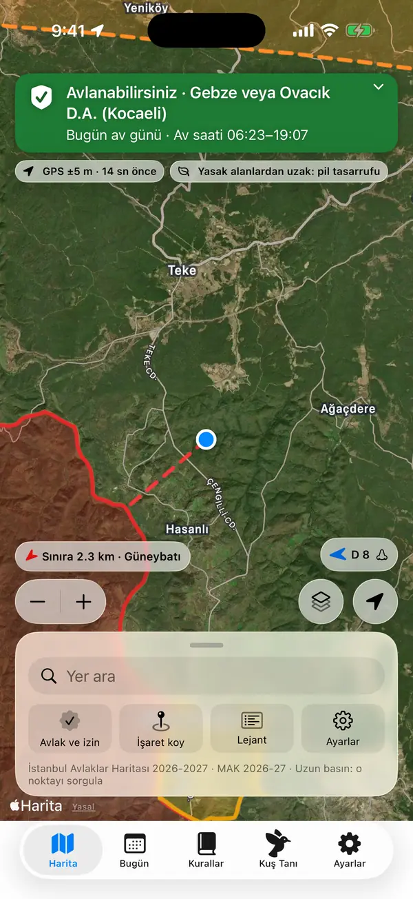
Bir noktayı sorgulamak
Haritada bir yere uzun basın: o noktanın durumu ve kuralları açılır, isterseniz oraya işaret koyarsınız. Küçük ekranda kart açıkken alt panel geçici olarak çekilir; kartı kapatınca geri gelir. Üstteki şeride dokunursanız bulunduğunuz yerdeki kuralların tam listesi görünür.

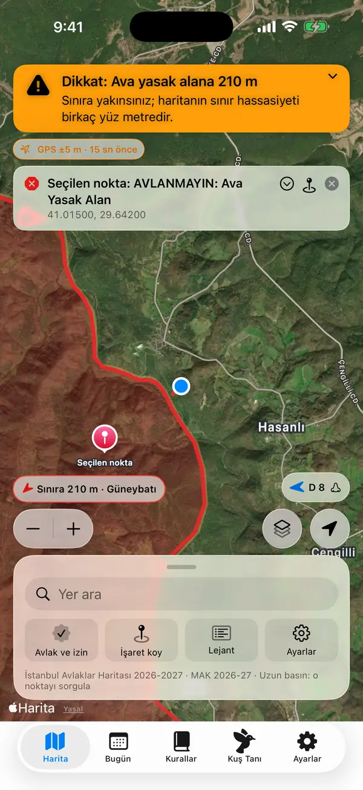
Katmanlar ve harita türü
Katmanlar düğmesinden harita türünü (uydu, topo…), avlak bölgelerini, Bakanlığın taranmış resmi haritasını, 300 m yasak bantlarını ve koku konisini açıp kapatabilirsiniz. Sol alttaki + / − düğmeleri haritayı her dokunuşta iki kat yakınlaştırır ya da uzaklaştırır; konumunuz takip ediliyorsa takip sürer. Her ekran boyunda ve saha modunda görünür; iki parmakla yakınlaştırma da çalışır.
İnternetsiz harita
Avlak bölgeleri ve kurallar uygulamayla gelir, internetsiz çalışır. Çekmeyen yerlerde de ayrıntılı topoğrafik harita görmek için Ayarlar › Çevrimdışı harita'dan Wi-Fi'deyken indirin (en çok 150 MB).
Yer arama
Alt paneldeki Yer ara ile köy, ilçe, mesire yeri ve avlak adı arayın. İnternet yokken yalnızca uygulamadaki adlar aranır.
Uyarılar5
Yasak alan uyarıları susturulmaz
Yasak alana yaklaşınca ya da girince ses, titreşim ve bildirimle uyarılırsınız. Bu uyarılar Odak ve Rahatsız Etme modlarında da gelir, uygulama kilitliyken de çalışır. Yasak alanda kaldıkça 2 dakikada bir hatırlatılır. Haritadaki çip sınıra uzaklığı ve yönü gösterir.

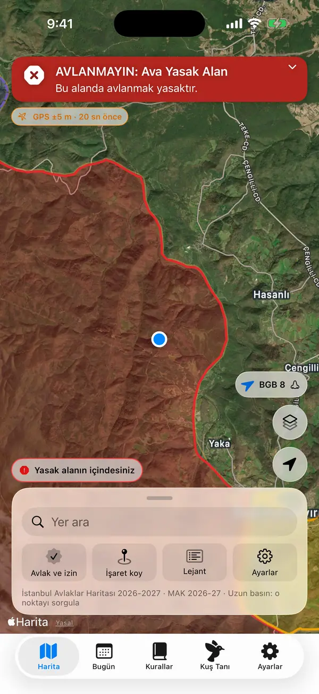
Yaklaşma mesafesi ve titreşim
Ayarlar › Uyarılar'dan yaklaşma uyarısı mesafesini (100–1000 m) seçin. Yasal 300/500 m kuralları her zaman uygulanır; bu mesafe ek temkin payıdır. Sınıra yaklaşırken titreşim de buradan açılıp kapanır.

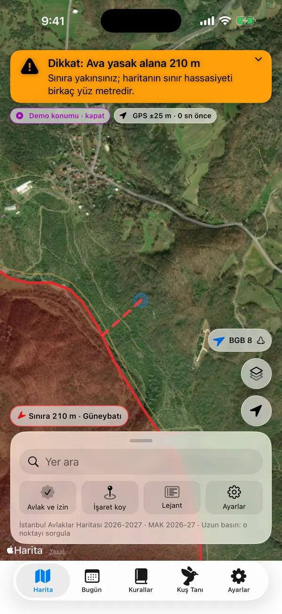
GPS zayıfsa ya da konum eskiyse
Konum bir buçuk dakikadan eskiyse uygulama "avlanabilirsiniz" demez, durumu en az turuncuya çeker. Açık gökyüzü görmeye çalışın; ormanlık arazide GPS onlarca metre sapabilir. Kesin Konum kapalıysa açmanız istenir.

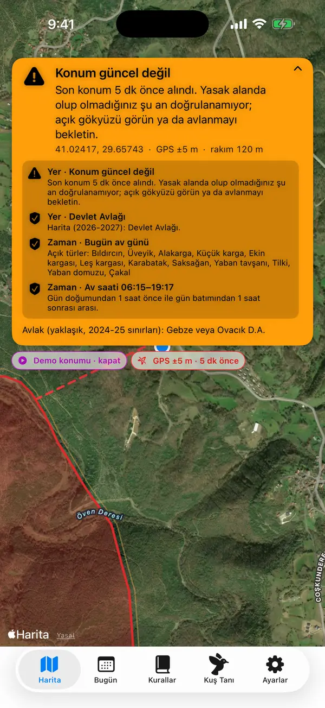
Uygulama kapalıyken uyarı
Ayarlar › Takip › "Uygulama kapalıyken de uyar" açıkken, telefon cebinizdeyken bile yasak alana yaklaşık 100–200 m kala bildirim gelir ("Her Zaman" konum izni gerekir). Bu bir yedektir, birkaç dakika gecikebilir. "Arka planda sürekli takip" tüm kuralları anlık denetler ama pili daha çok kullanır.
Av saati hatırlatmaları
Av günlerinde, bulunduğunuz yere göre av saati başlayınca, bitmesine az kala ve bitince bildirim gelir. Ayarlar › Bildirimler'den açıp kapatın, "Bitişten önce uyar" süresini seçin.
Av günü ve hava3
Av günü, av saati ve MAK
Bugün sekmesi seçtiğiniz günün av günü olup olmadığını, bulunduğunuz yere göre avlanma saatini, açık türleri ve günlük limitleri gösterir. Bilgiler 2026-27 Merkez Av Komisyonu (MAK) kararından alınmıştır. "Zaman kurallarını da değerlendir" açıkken av günü ve saati üstteki şeridi de etkiler.

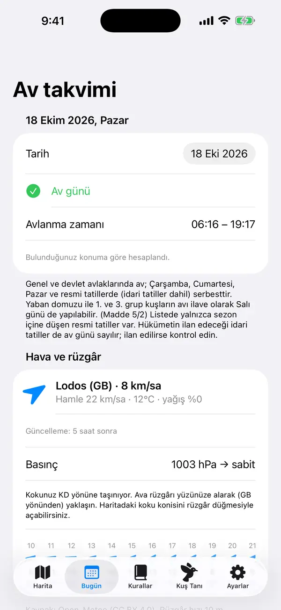
Hava ve rüzgâr
Bugün sekmesinde rüzgâr yönü ve hızı, sıcaklık ve yağış görünür (internet gerekir). Haritadaki rüzgâr düğmesi koku konisini açar: kokunuzun taşındığı alan. Ava rüzgârı yüzünüze alarak yaklaşın.

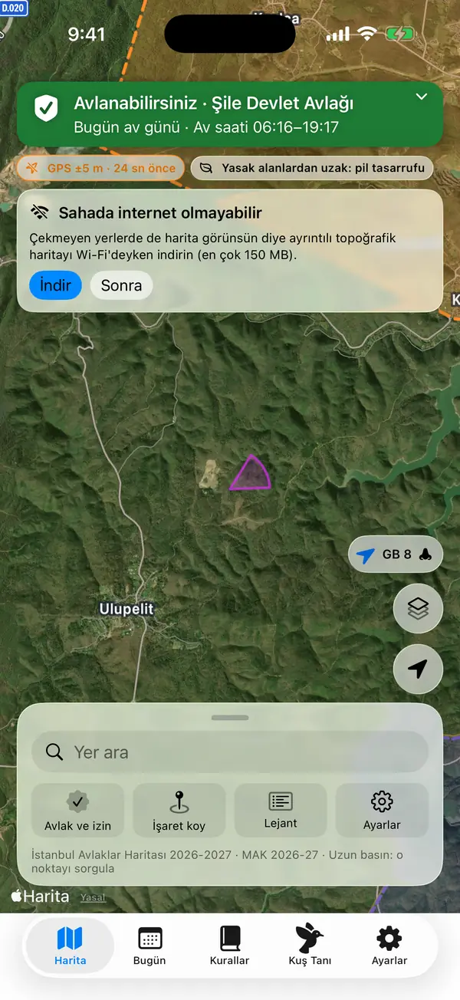
Av defteri
Bugün sekmesindeki + ile avınızı kaydedin; kalan günlük limit gösterilir, limit dolunca + kapanır. Kayıtlar yalnızca bu telefonda tutulur.
Kurallar ve izin3
Kurallar sekmesi
MAK kararının İstanbul özeti: 2026-27 değişiklikleri, mesafe yasakları, avlakların açık/kapalı durumu, korunan alanlar ve önemli yasaklar. İngilizce çeviri bilgi içindir; geçerli olan Türkçe karardır.

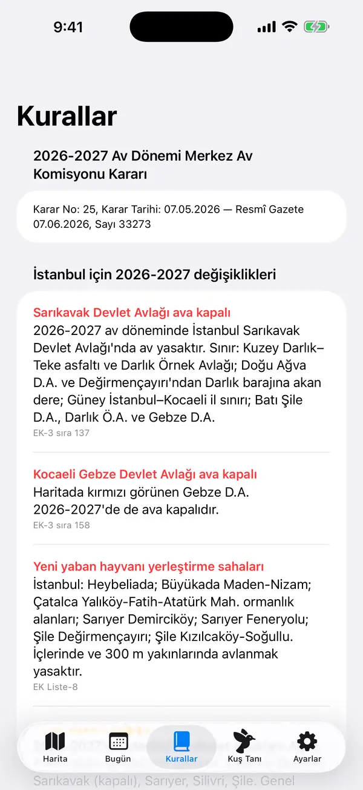
Mesafe kuralları
Uygulama köy/ilçe merkezleri, mesire yerleri, karayolları ve korunan alanlara mesafeyi kendisi denetler; okul, sağlık tesisi, askeri alan gibi yerler için OpenStreetMap verisini kullanır. Bu veri eksik olabilir: arazide gördüğünüz tesis için kuralı kendiniz uygulayın.
Avlak ve izin belgesi
Alt paneldeki Avlak ve izin'den AVBİS izin belgenizin ekran görüntüsünü ya da PDF'ini ekleyin. Belge telefonda okunur, hiçbir yere gönderilmez; ad soyad ve belge numaraları saklanmaz. İzinli avlak haritada vurgulanır, en yakın kenarına yol tarifi alabilirsiniz.
Kuş tanıma4
Kuşu ses, fotoğraf ya da videoyla tanıyın
Kuş Tanı sekmesinde kuş sesini 15 sn dinletin, fotoğraf seçin ya da video seçin veya çekin. Sonuçta türün bugünkü MAK durumu görünür. Tahmin bir yardımdır, kesin teşhis değildir: türden emin olmadan atış yapmayın.

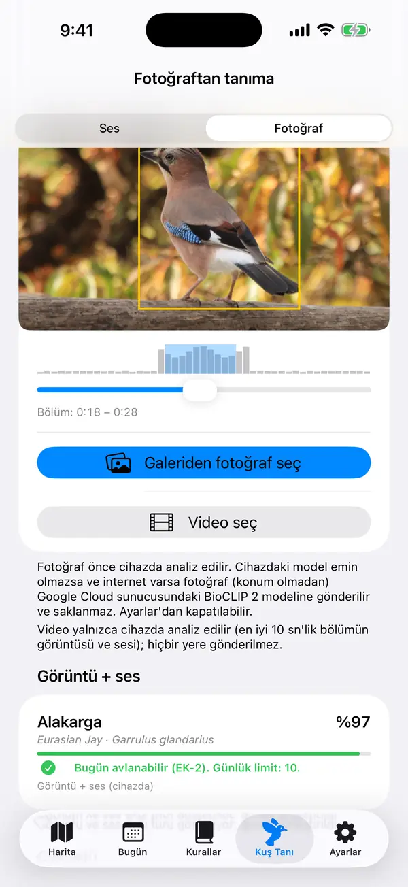
Sesle tanıma
Telefonu kuşa doğru tutun, konuşmayın. Kayıt telefonda BirdNET modeliyle çözümlenir, internet gerekmez; tahmin İstanbul'da o hafta bulunabilecek türlerle sınırlanır. Koruma altındaki türler ses olarak av türlerine benzeyebilir.

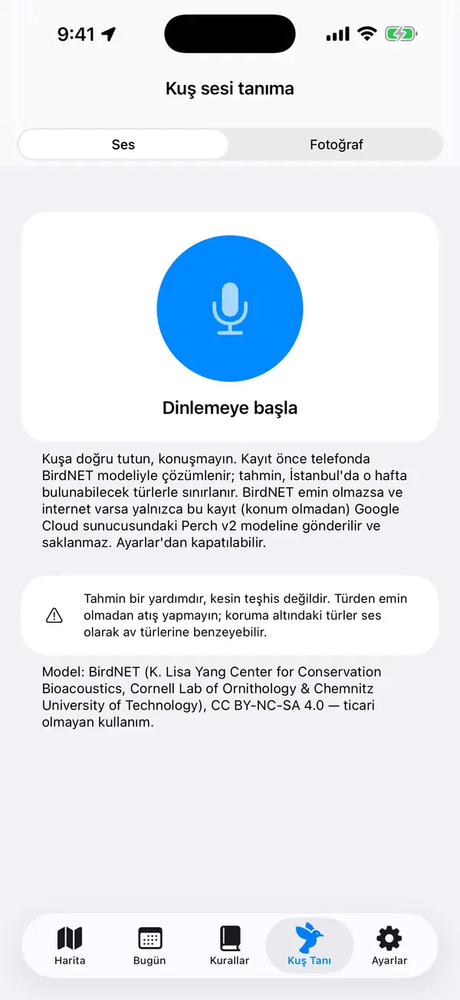
Fotoğraf ve videoyla tanıma
Kuş net olsun. Telefon fotoğraftaki kuşları kendisi bulur ve her birini kırparak tanır; sarı çerçeve sonucu gösterilen kuştur. Fotoğrafta farklı türden birden fazla kuş varsa her birinin en olası türü numarasıyla ayrıca listelenir. En olası türler yüzdesiyle sıralanır. Videoda en iyi 10 sn'lik bölümün görüntüsü ve sesi birlikte değerlendirilir, bölümü kendiniz de kaydırabilirsiniz. Fotoğraf ve video yalnızca telefonda işlenir (çevrimiçi kontrol açıksa ve cihazdaki model emin değilse fotoğraf sorulabilir).

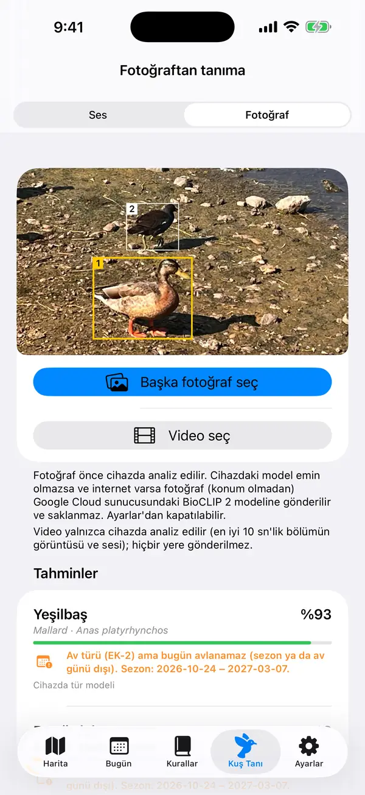
Belirsiz sonuçta çevrimiçi kontrol
Telefondaki model emin olmazsa ve internet varsa yalnızca seçtiğiniz fotoğraf ya da ses kaydı (konum olmadan) tanıma sunucusuna gönderilir ve saklanmaz. Video gönderilmez. Ayarlar › Kuş tanıma'dan kapatabilirsiniz; kapalıyken tanıma yalnızca telefonda yapılır.

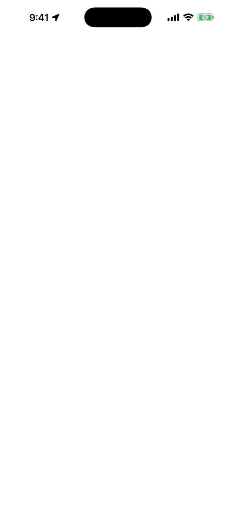
Saha araçları5
İşaretler ve yönlendirme
Araç, pusu, av düştü, su/kaynak ve not işaretleri koyun (alt paneldeki İşaret koy ya da haritada uzun basma). Yönlendir'e dokununca pusula ve kalan mesafe gösterilir. İşaretleri GPX olarak paylaşabilirsiniz; yalnızca bu telefonda saklanırlar.

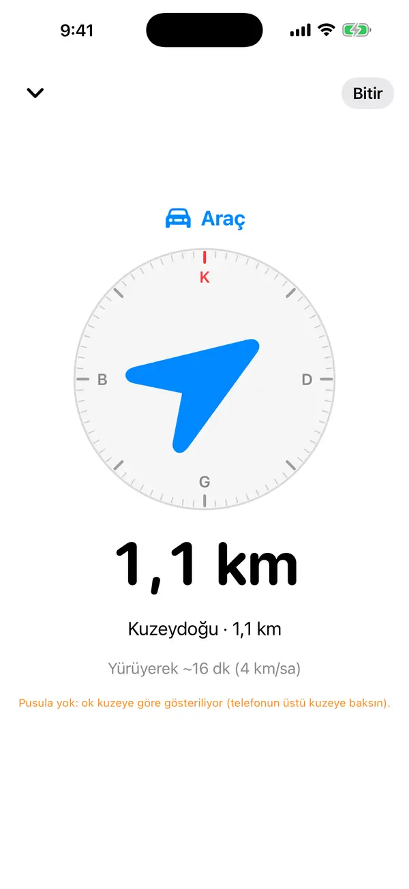
İz kaydı
Alt paneldeki İz kaydı ile yürüdüğünüz yolu kaydedin, işiniz bitince durdurun. Kayıtlı izleri listeden GPX olarak paylaşabilir ya da silebilirsiniz. Konum geçmişi yalnızca siz iz kaydını başlatırsanız tutulur.
Acil durum ve konum paylaşma
Alt paneldeki Acil durum ekranı koordinatlarınızı büyük yazıyla, doğruluğu ve en yakın yerleşimi gösterir; 112'yi tek dokunuşla arayabilirsiniz. Konumu paylaş ile konumunuzu harita bağlantısıyla gönderin.
Saha modu ve gece teması
Saha modu eldivenle kullanım için düğmeleri ve yazıları büyütür, ekranı açık tutar. Gece (kırmızı) teması gece görüşünü korur; Otomatik'te gün batımından 30 dk önce başlar, gün doğumundan 30 dk sonra biter. İkisi de Ayarlar › Saha modu'nda.

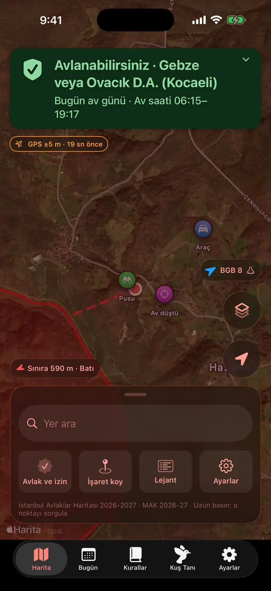
Kilit ekranı, Apple Watch ve Siri
"Durumu kilit ekranında göster" açıkken av durumu ve rüzgâr kilit ekranında, Dynamic Island'da ve Apple Watch'ta görünür. Ana ekrana Av durumu aracını ekleyebilir, Siri'ye "Av Haritası burada avlanabilir miyim" ya da "Av Haritası av saati" diyebilirsiniz.
Ayarlar4
Pil ve takip
Pusuda 3 dk kıpırdamazsanız ve yasak alanlardan uzaktaysanız GPS hassasiyeti kendiliğinden düşer, pil korunur. "Ekranı açık tut" ve açılış/kapanış kuş sesi Ayarlar › Takip'te.

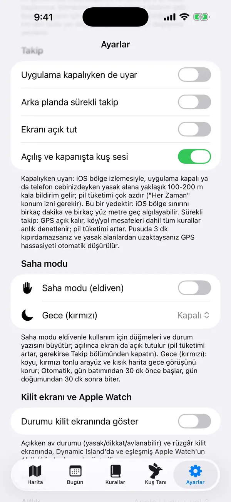
Uyarı sesleri
Uyarı sesleri gerçek kuş kayıtlarıdır: dikkat için bıldırcın, yasak alan için saksağan alarmı. Ayarlar › Kuş sesleri'nde dokunarak dinleyebilirsiniz.
Geri bildirim gönderme
Ayarlar › Yardım › Geri bildirim gönder ile hata, öneri, harita/alan düzeltmesi ya da kuş tanıma sorununu geliştiriciye yazabilirsiniz. İsterseniz ekran görüntüsü ya da fotoğraf (konum bilgisi silinerek), harita bildiriminde haritada uzun bastığınız noktayı ya da harita merkezini (~11 m'ye yuvarlanır) ve e-postanızı ekleyin; neyin gönderileceği formda yazar. İnternet yoksa bildirim telefonda bekler, bağlantı gelince gider. Uygulamayı bir süre kullandıktan sonra App Store değerlendirmesi en çok 120 günde bir sorulabilir; uyarı varken hiç sorulmaz.
Tanı raporları, saha kaydı ve demo
Ayarlar › Gelişmiş'te çökme raporlarını paylaşabilir, saha kaydını açabilirsiniz (varsayılan kapalı, şifreli, 7 günde kendiliğinden silinir). Demo modu, uyarıları denemek için Sarıkavak'ta yasak alana giden bir yürüyüş oynatır.
Gizlilik3
Konum ve verileriniz
Konum yalnızca telefonda işlenir; hava tahmini için yalnızca yaklaşık konum (~1 km) gönderilir. İzler, işaretler, av defteri ve izin belgesi yalnızca bu telefonda saklanır. Gizlilik politikası Ayarlar › Hakkında'da.
Face ID ile uygulama kilidi
Ayarlar › Gizlilik'ten uygulamayı Face ID, Touch ID ya da cihaz parolasıyla kilitleyin. Kilit yalnızca ekranı gizler: konum takibi ve yasak alan uyarıları kilitliyken de çalışır.
Anonim kullanım istatistikleri
Uygulamayı geliştirmek için hangi özelliklerin ne sıklıkla ve hangi avlakta kullanıldığı anonim olarak sayılır; kimliğiniz ve tam konumunuz gönderilmez. Ayarlar'dan kapatabilirsiniz; kapatınca bekleyen kayıtlar silinir.

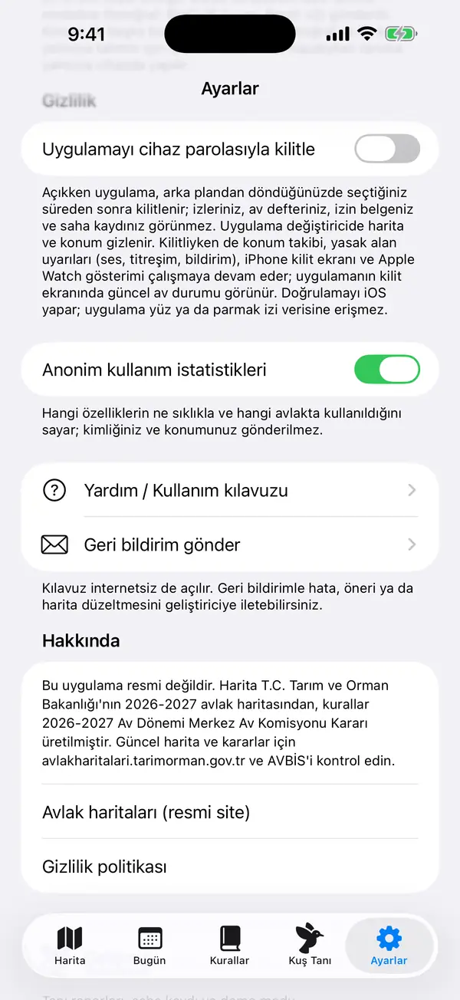